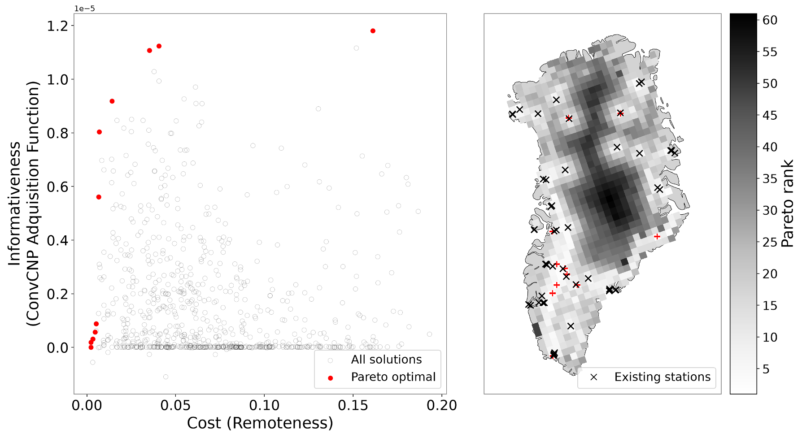

The most informative place for a new sensor is not always the most practical one to reach. We treat placement as a trade-off between two objectives: the informativeness of a candidate location, scored by the ConvCNP acquisition function, and its cost, measured here as remoteness.

- Left: every candidate location plotted by cost and informativeness. The red points are Pareto optimal: no other location is both cheaper and more informative.
- Right: the same candidates mapped across Greenland, shaded by Pareto rank (lighter is better), with existing stations marked ×. The red + markers show the Pareto-optimal locations.